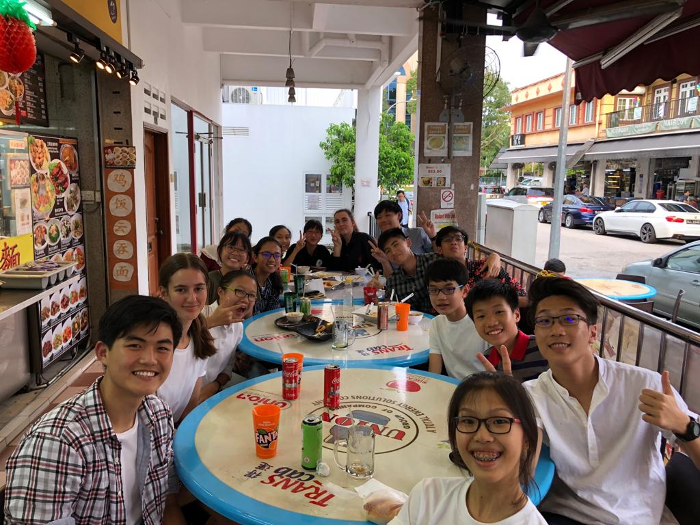

Youth Faculty 18: Efficacy of Character and Citizenship Education
Under Youth Assembly 6: National Education
Hello! We are Youth Faculty 18, and the issue we are discussing is the efficacy of character and citizenship education or CCE for short. What is CCE? Well CCE refers to the education which aims to cultivate healthy values and and patriotism to nurture responsible and empathetic citizens. It is an essential building block to unite the country by imparting the country's core values and beliefs.
The problems which hinder the efficacy of CCE can be broken down into two categories.
Firstly, it is internal factors such as the effectiveness of the CCE framework itself in imparting knowledge and inculcating values in students.
Secondly, it is external factors such as environmental (school cultural, social circle, family background) and cultural factors of the student and the advent of social media which can also hinder the student's ability to absorb what is taught in CCE.
Our solutions focus on tackling both internal and external factors to make CCE more effective in achieving its objectives. They include:
- Revamped CCE curriculum with more engaging activities relating to CCE and ensuring teachers are trained to integrate CCE into teaching through teaching courses
- Teaching students about responsible usage of social media through talks and also skills on the discerning of online information
- Intervention from the school and friends to assist those in dysfunctional families or negative social circles
- Policies from the government to uplift those of lower SES in order to support families in poverty
- Integration of different cultures to promote one integrated CCE
The Lens
For our lens video, we narrate the adventures of a boy named Steve who could not absorb what was being taught in CCE lessons due to boring classes and negative environmental influences. However, after a revamp in the CCE curriculum and intervention from the school and family to introduce Steve to new friends, he was able to turn over a new leaf and become a morally upright citizen.
Exhibition
Our exhibition aimed to give our audience a better idea of our topic. The information was kept as concise but to the point as possible. Our exhibition boards consisted of:
- What is CCE
- Key Stakeholders
- Different factors hindering effective CCE
- Our proposed solutions to tackle the problems
- Some Case Studies of different CCEs
(here we would include your exhibition boards, hopefully you left it in ops room)
THANK YOU FOR READING THIS
YF18 has developed a deeper understanding towards CCE, not just in Singapore, but also examining different case studies from around the world. We have identified what are the main problems which hinder the efficacy of CCE, and have brainstormed to construct feasible solutions which can be implemented in our present day society. Aside from this, we have also forged close friendships and had lots of fun in the short 3-4 days of the convention. From YF18, thank you to everyone who made this convention possible and may all the memories we made stay with us forever!! :)